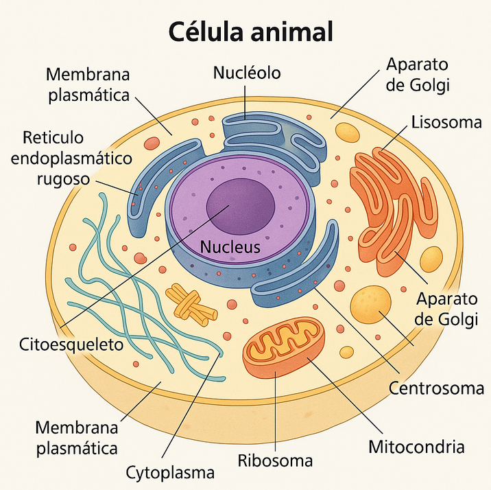

La inteligencia artificial generativa de imágenes, de una forma similar a la de texto, nos permite crear imágenes totalmente nuevas y realistas con diversos estilos (cómic, óleo, fotorrealistas, con el estilo de Dalí, etc.).
Entre las limitaciones actuales, destacamos dos de ellas:
Aunque se ha mejorado notablemente, la inclusión de texto en las imágenes todavía presenta numerosos errores, ya sean faltas de ortografía o porque se traduce al inglés sin aviso previo..
Precisión limitada en detalles científicos/técnicos. Las IA aún tienen dificultades para generar imágenes con precisión de objetos complejos como células, órganos, máquinas, etc. Un profesor de ciencias puede usar la IA generativa de imágenes para crear una representación de una célula. Sin embargo, la imagen generada puede no ser precisa, lo que puede confundir a los alumnos. Lo mismo sucedería, por ejemplo, si intentamos reproducir una época histórica concreta donde los detalles pueden ser inconsistentes y anacrónicos. 
Elaboración propia. Célula animal creada (de forma incorrecta) por ChatGPT. El prompt utlizado fue: crea la imagen de una célula animal para un libro de texto de 1º de la ESO, debe contener todos los orgánulos correctamente nombrados
Como puede verse en la imagen anterior, el dibujo de la célula está plagado de errores en cuanto a los nombres de los orgánulos celulares.
La mayoría utiliza un sistema de créditos o tokens que limitan el número de imágenes que podemos generar. Estos créditos se recargan pasado un tiempo.
A continuación presentamos una lista de servicios de IA generativa de imágenes que hemos dividido entre aquellos que están expresamente dedicados a las imágenes y los que pueden utilizarse a través del chat de texto y que, por tanto, no están dedicados exclusivamente a imágenes.
Webs dedicadas a imágenes
Estos servicios de imágenes con IA están dedicados a la generación de ilustraciones. La mayoría tiene opciones extras que permiten controlar en mayor o menor grado el resultado.
Recraft. Generador de imágenes gratuito y sin límites que permite la manipulación de las imágenes y añadir texto.
Stable Diffusion. Stablediffusionweb.com es una interfaz en línea que utiliza el modelo Stable Diffusion XL para generar imágenes a partir de texto. Ofrece creación gratuita de arte con inteligencia artificial, procesando texto, imágenes y videos. La plataforma destaca por su facilidad de uso, generación rápida de imágenes de alta calidad y enfoque en la privacidad del usuario. Permite crear arte variado, desde paisajes fantásticos hasta retratos, sin recopilar información personal.
Craiyon. No necesita darse de alta ni créditos. Es un generador de imágenes por inteligencia artificial que permite crear arte digital a partir de descripciones textuales. Ofrece 9 imágenes gratuitas por solicitud, con un modelo propio de generación. Disponible en versión gratuita con anuncios y plan de pago, facilita la creación artística a usuarios sin conocimientos técnicos.
Generador de imágenes de Bing. Proporcionan créditos que se renuevan semanalmente. Además de la dirección anterior, se puede acceder directamente desde el chat de Copilot, pidiéndole que nos haga una imagen. Utiliza DALL·E 3.
Leonardo.AI. Hace imágenes realistas de calidad. Da un cierto número de tokens que se renuevan diariamente.
Ideogram. No utiliza créditos ni tokens, pero cuando está saturado hace esperar entre imagen e imagen.
NightCafe Studio Permite hacer dibujos enfocados sobre todo al arte y permite hacer un número determinado de imágenes cada mes.
Flux Pro AI. Texto a imagen y también imagen a imagen.
RedPanda. Con un número limitado de Tokens permite hacer unas pocas imágenes.
Clipdrop. Es una plataforma de IA para edición de imágenes que no requiere iniciar sesión. Ofrece herramientas como relleno generativo, eliminación de fondos, eliminación de objetos, redimensionamiento y generación de texto a imagen. Permite manipular y crear imágenes con facilidad mediante tecnologías de inteligencia artificial.
Raphael.ai es un generador de imágenes con inteligencia artificial que transforma descripciones de texto en visuales de alta calidad, como escenas fotorrealistas, ilustraciones artísticas o imágenes estilo anime. Utiliza el modelo FLUX.1-Dev, destacando por su rapidez, calidad de imagen y facilidad de uso, sin necesidad de conocimientos técnicos. No requiere registro, lo que lo hace accesible para todos y es gratuito.
Chatbots que también generan imágenes
Cada vez más, los chatbots conversacionales incorporan la capacidad de hacer imágenes. Estos son los chatbots más comunes que permiten hacerlas:
En estos momentos, las imágenes con aplicación educativa (ilustraciones, esquemas, infografías, etc.) son de calidad superior en ChatGPT y Copilot, ya que utilizan una versión mejorada de DALL·E 3. No obstante, las imágenes deben supervisarse siempre para comprobar que son correctas, especialmente si tratan sobre aspectos curriculares (anatomía, momentos históricos, etc.)
Los créditos en la IA generativa de imágenes se utilizan como una forma de limitar el número de imágenes que un usuario puede crear
Los tokens se utilizan como una forma de cuantificar y limitar el uso de los recursos de la IA1. Estos tokens pueden ser considerados como “créditos” que se consumen cuando se utiliza el servicio para generar imágenes